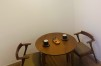
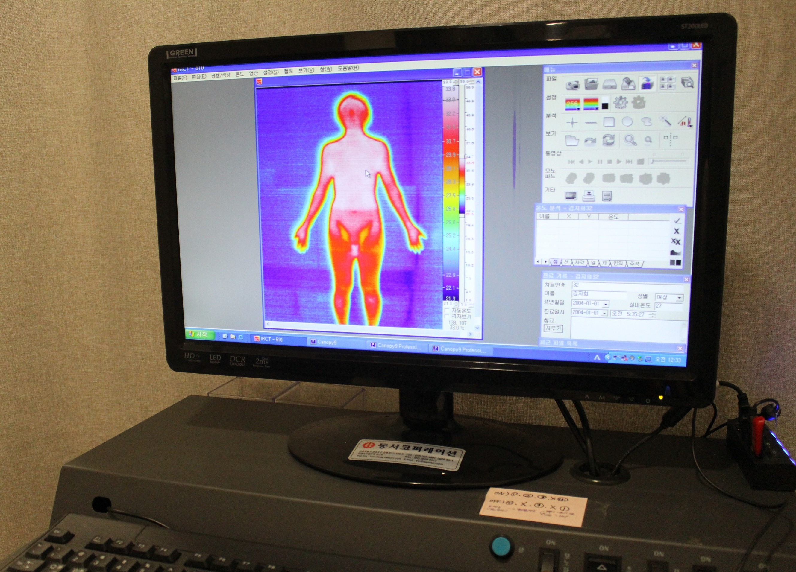
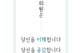
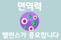
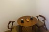
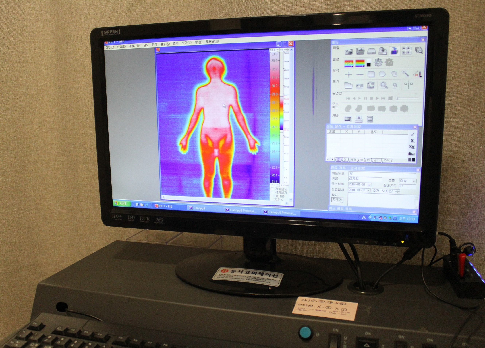
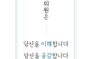
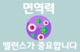

면역난치클리닉
 

-

면역클리닉
약을 먹어도 그때뿐인 이 병,
뭔가 근본적인 해결책은 없을까?
면역력, 밸런스가 중요합니다
우리 몸을 질병으로부터 지켜내는 면역력!
너무 약해도 문제, 너무 강해도 문제
면역의 균형을 맞춰주세요
면역력이 떨어지면
이곳저곳 잔병치레를 하기 시작합니다
- 1피로회복이 안되고 스테미너 떨어지는 아빠
- 2감기에 잘 걸리고 갱년기가 시작되는 엄마
- 3손발이 차고 생리통이 심한 딸
- 4입이 짧고 자꾸 배가 아프다고 하는 아들
- 5몸에 멍이 잘 들고 기침을 달고 사는 할머니
면역반응이 너무 강하면
고약한 자가면역질환이 생겨요
- 1피부: 건선, 아토피, 백반증, 한포진, 경피증
- 2소화기: 크론병, 궤양성대장염
- 3통증: 류마티스관절염, 강직성척추염
- 4대사: 제1형당뇨병, 갑상선염(grave's disease)
- 5전신성: 쇼그렌증후군, 베체트병, 루푸스
- 6기타: 레이노증후군, 혈관염, 다발성경화증
해움한의원은 이렇게 치료합니다
1. 이해
다양한 검사장비와 한의학적 진단을 통해
내가 어떤 사람인지, 이 병이 왜 찾아왔는지
이해할 수 있도록 도와드립니다.
자율신경검사, 적외선체열진단, 혈액호르몬검사
당신이 가진 문제의 근원을 찾기 위해 나에게 맞는 꼭 필요한 검사만을 시행합니다.
2. 공감
그동안 아무도 몰라주던 아픔을 가진
당신의 말에 귀기울이겠습니다.
3. 위로
그동안 지친 당신의 몸과 마음에게
쉬어가는 시간을 주세요
-
몸과 마음에 대한 치료
편안한 분위기에서 침,약침,추나,한약 등의 치료와 자율신경훈련을 받으실 수 있어요
-
개인 맞춤 솔루션
치료가 끝나도 좋아진 몸상태를 유지할 수 있도록 식단부터 생활습관까지
더 자세히 알아보고 싶다면?
목동건선한의원 목동역건선한의원 신정역건선한의원 신정네거리역건선한의원 양천구건선한의원 신월동건선한의원 오목교건선한의원 오목교역건선한의원 까치산건선한의원 까치산역건선한의원 화곡역건선한의원 화곡동건선한의원 발산역건선한의원 우장산건선한의원 우장산역건선한의원 가양역건선한의원 등촌역건선한의원 염창역건선한의원 김포건선한의원 마곡건선한의원 마곡역건선한의원 발산건선한의원 발산역건선한의원 마곡나루역건선한의원 마곡나루건선한의원 양천향교역건선한의원 증미역건선한의원 선유도역건선한의원 마포구건선한의원 일산건선한의원 홍대건선한의원 합정건선한의원 홍대역건선한의원 합정역건선한의원 서교동건선한의원 이대역건선한의원 서울건선한의원 목동건선한약 목동역건선한약 신정역건선한약 신정네거리역건선한약 양천구건선한약 신월동건선한약 오목교건선한약 오목교역건선한약 까치산건선한약 까치산역건선한약 화곡역건선한약 화곡동건선한약 발산역건선한약 우장산건선한약 우장산역건선한약 가양역건선한약 등촌역건선한약 염창역건선한약 김포건선한약 마곡건선한약 마곡역건선한약 발산건선한약 발산역건선한약 마곡나루역건선한약 마곡나루건선한약 양천향교역건선한약 증미역건선한약 선유도역건선한약 마포구건선한약 일산건선한약 홍대건선한약 합정건선한약 홍대역건선한약 합정역건선한약 서교동건선한약 이대역건선한약 서울건선한약 목동아토피한의원 목동역아토피한의원 신정역아토피한의원 신정네거리역아토피한의원 양천구아토피한의원 신월동아토피한의원 오목교아토피한의원 오목교역아토피한의원 까치산아토피한의원 까치산역아토피한의원 화곡역아토피한의원 화곡동아토피한의원 발산역아토피한의원 우장산아토피한의원 우장산역아토피한의원 가양역아토피한의원 등촌역아토피한의원 염창역아토피한의원 김포아토피한의원 마곡아토피한의원 마곡역아토피한의원 발산아토피한의원 발산역아토피한의원 마곡나루역아토피한의원 마곡나루아토피한의원 양천향교역아토피한의원 증미역아토피한의원 선유도역아토피한의원 마포구아토피한의원 일산아토피한의원 홍대아토피한의원 합정아토피한의원 홍대역아토피한의원 합정역아토피한의원 서교동아토피한의원 이대역아토피한의원 서울아토피한의원 목동아토피한약 목동역아토피한약 신정역아토피한약 신정네거리역아토피한약 양천구아토피한약 신월동아토피한약 오목교아토피한약 오목교역아토피한약 까치산아토피한약 까치산역아토피한약 화곡역아토피한약 화곡동아토피한약 발산역아토피한약 우장산아토피한약 우장산역아토피한약 가양역아토피한약 등촌역아토피한약 염창역아토피한약 김포아토피한약 마곡아토피한약 마곡역아토피한약 발산아토피한약 발산역아토피한약 마곡나루역아토피한약 마곡나루아토피한약 양천향교역아토피한약 증미역아토피한약 선유도역아토피한약 마포구아토피한약 일산아토피한약 홍대아토피한약 합정아토피한약 홍대역아토피한약 합정역아토피한약 서교동아토피한약 이대역아토피한약 서울아토피한약 목동백반증한의원 목동역백반증한의원 신정역백반증한의원 신정네거리역백반증한의원 양천구백반증한의원 신월동백반증한의원 오목교백반증한의원 오목교역백반증한의원 까치산백반증한의원 까치산역백반증한의원 화곡역백반증한의원 화곡동백반증한의원 발산역백반증한의원 우장산백반증한의원 우장산역백반증한의원 가양역백반증한의원 등촌역백반증한의원 염창역백반증한의원 김포백반증한의원 마곡백반증한의원 마곡역백반증한의원 발산백반증한의원 발산역백반증한의원 마곡나루역백반증한의원 마곡나루백반증한의원 양천향교역백반증한의원 증미역백반증한의원 선유도역백반증한의원 마포구백반증한의원 일산백반증한의원 홍대백반증한의원 합정백반증한의원 홍대역백반증한의원 합정역백반증한의원 서교동백반증한의원 이대역백반증한의원 서울백반증한의원 목동백반증한약 목동역백반증한약 신정역백반증한약 신정네거리역백반증한약 양천구백반증한약 신월동백반증한약 오목교백반증한약 오목교역백반증한약 까치산백반증한약 까치산역백반증한약 화곡역백반증한약 화곡동백반증한약 발산역백반증한약 우장산백반증한약 우장산역백반증한약 가양역백반증한약 등촌역백반증한약 염창역백반증한약 김포백반증한약 마곡백반증한약 마곡역백반증한약 발산백반증한약 발산역백반증한약 마곡나루역백반증한약 마곡나루백반증한약 양천향교역백반증한약 증미역백반증한약 선유도역백반증한약 마포구백반증한약 일산백반증한약
홍대백반증한약 합정백반증한약 홍대역백반증한약 합정역백반증한약 서교동백반증한약 이대역백반증한약 서울백반증한약 목동한포진한의원 목동역한포진한의원 신정역한포진한의원 신정네거리역한포진한의원 양천구한포진한의원 신월동한포진한의원 오목교한포진한의원 오목교역한포진한의원 까치산한포진한의원 까치산역한포진한의원 화곡역한포진한의원 화곡동한포진한의원 발산역한포진한의원 우장산한포진한의원 우장산역한포진한의원 가양역한포진한의원 등촌역한포진한의원 염창역한포진한의원 김포한포진한의원 마곡한포진한의원 마곡역한포진한의원 발산한포진한의원 발산역한포진한의원 마곡나루역한포진한의원 마곡나루한포진한의원 양천향교역한포진한의원 증미역한포진한의원 선유도역한포진한의원 마포구한포진한의원 일산한포진한의원 홍대한포진한의원 합정한포진한의원 홍대역한포진한의원 합정역한포진한의원 서교동한포진한의원 이대역한포진한의원 서울한포진한의원 목동한포진한약 목동역한포진한약 신정역한포진한약 신정네거리역한포진한약 양천구한포진한약 신월동한포진한약 오목교한포진한약 오목교역한포진한약 까치산한포진한약 까치산역한포진한약 화곡역한포진한약 화곡동한포진한약 발산역한포진한약 우장산한포진한약 우장산역한포진한약 가양역한포진한약 등촌역한포진한약 염창역한포진한약 김포한포진한약 마곡한포진한약 마곡역한포진한약 발산한포진한약 발산역한포진한약 마곡나루역한포진한약 마곡나루한포진한약 양천향교역한포진한약 증미역한포진한약 선유도역한포진한약 마포구한포진한약 일산한포진한약 홍대한포진한약 합정한포진한약 홍대역한포진한약 합정역한포진한약 서교동한포진한약 이대역한포진한약 서울한포진한약 목동경피증한의원 목동역경피증한의원 신정역경피증한의원 신정네거리역경피증한의원 양천구경피증한의원 신월동경피증한의원 오목교경피증한의원 오목교역경피증한의원 까치산경피증한의원 까치산역경피증한의원 화곡역경피증한의원 화곡동경피증한의원 발산역경피증한의원 우장산경피증한의원 우장산역경피증한의원 가양역경피증한의원 등촌역경피증한의원 염창역경피증한의원 김포경피증한의원 마곡경피증한의원 마곡역경피증한의원 발산경피증한의원 발산역경피증한의원 마곡나루역경피증한의원 마곡나루경피증한의원 양천향교역경피증한의원 증미역경피증한의원 선유도역경피증한의원 마포구경피증한의원 일산경피증한의원 홍대경피증한의원 합정경피증한의원 홍대역경피증한의원 합정역경피증한의원 서교동경피증한의원 이대역경피증한의원 서울경피증한의원 목동경피증한약 목동역경피증한약 신정역경피증한약 신정네거리역경피증한약 양천구경피증한약 신월동경피증한약 오목교경피증한약 오목교역경피증한약 까치산경피증한약 까치산역경피증한약 화곡역경피증한약 화곡동경피증한약 발산역경피증한약 우장산경피증한약 우장산역경피증한약 가양역경피증한약 등촌역경피증한약 염창역경피증한약 김포경피증한약 마곡경피증한약 마곡역경피증한약 발산경피증한약 발산역경피증한약 마곡나루역경피증한약 마곡나루경피증한약 양천향교역경피증한약 증미역경피증한약 선유도역경피증한약 마포구경피증한약 일산경피증한약 홍대경피증한약 합정경피증한약 홍대역경피증한약 합정역경피증한약 서교동경피증한약 이대역경피증한약 서울경피증한약 목동크론병한의원 목동역크론병한의원 신정역크론병한의원 신정네거리역크론병한의원 양천구크론병한의원 신월동크론병한의원 오목교크론병한의원 오목교역크론병한의원 까치산크론병한의원 까치산역크론병한의원 화곡역크론병한의원 화곡동크론병한의원 발산역크론병한의원 우장산크론병한의원 우장산역크론병한의원 가양역크론병한의원 등촌역크론병한의원 염창역크론병한의원 김포크론병한의원 마곡크론병한의원 마곡역크론병한의원 발산크론병한의원 발산역크론병한의원 마곡나루역크론병한의원 마곡나루크론병한의원 양천향교역크론병한의원 증미역크론병한의원 선유도역크론병한의원 마포구크론병한의원 일산크론병한의원 홍대크론병한의원 합정크론병한의원 홍대역크론병한의원 합정역크론병한의원 서교동크론병한의원 이대역크론병한의원 서울크론병한의원 목동크론병한약 목동역크론병한약 신정역크론병한약 신정네거리역크론병한약 양천구크론병한약 신월동크론병한약 오목교크론병한약 오목교역크론병한약 까치산크론병한약 까치산역크론병한약 화곡역크론병한약 화곡동크론병한약 발산역크론병한약 우장산크론병한약 우장산역크론병한약
가양역크론병한약 등촌역크론병한약 염창역크론병한약 김포크론병한약 마곡크론병한약 마곡역크론병한약 발산크론병한약 발산역크론병한약 마곡나루역크론병한약 마곡나루크론병한약 양천향교역크론병한약 증미역크론병한약 선유도역크론병한약 마포구크론병한약 일산크론병한약 홍대크론병한약 합정크론병한약 홍대역크론병한약 합정역크론병한약 서교동크론병한약 이대역크론병한약 서울크론병한약 목동궤양성대장염한의원 목동역궤양성대장염한의원 신정역궤양성대장염한의원 신정네거리역궤양성대장염한의원 양천구궤양성대장염한의원 신월동궤양성대장염한의원 오목교궤양성대장염한의원 오목교역궤양성대장염한의원 까치산궤양성대장염한의원 까치산역궤양성대장염한의원 화곡역궤양성대장염한의원 화곡동궤양성대장염한의원 발산역궤양성대장염한의원 우장산궤양성대장염한의원 우장산역궤양성대장염한의원 가양역궤양성대장염한의원 등촌역궤양성대장염한의원 염창역궤양성대장염한의원 김포궤양성대장염한의원 마곡궤양성대장염한의원 마곡역궤양성대장염한의원 발산궤양성대장염한의원 발산역궤양성대장염한의원 마곡나루역궤양성대장염한의원 마곡나루궤양성대장염한의원 양천향교역궤양성대장염한의원 증미역궤양성대장염한의원 선유도역궤양성대장염한의원 마포구궤양성대장염한의원 일산궤양성대장염한의원 홍대궤양성대장염한의원 합정궤양성대장염한의원 홍대역궤양성대장염한의원 합정역궤양성대장염한의원 서교동궤양성대장염한의원 이대역궤양성대장염한의원 서울궤양성대장염한의원 목동궤양성대장염한약 목동역궤양성대장염한약 신정역궤양성대장염한약 신정네거리역궤양성대장염한약 양천구궤양성대장염한약 신월동궤양성대장염한약 오목교궤양성대장염한약 오목교역궤양성대장염한약 까치산궤양성대장염한약 까치산역궤양성대장염한약 화곡역궤양성대장염한약 화곡동궤양성대장염한약 발산역궤양성대장염한약 우장산궤양성대장염한약 우장산역궤양성대장염한약 가양역궤양성대장염한약 등촌역궤양성대장염한약 염창역궤양성대장염한약 김포궤양성대장염한약 마곡궤양성대장염한약 마곡역궤양성대장염한약 발산궤양성대장염한약 발산역궤양성대장염한약 마곡나루역궤양성대장염한약 마곡나루궤양성대장염한약 양천향교역궤양성대장염한약 증미역궤양성대장염한약 선유도역궤양성대장염한약 마포구궤양성대장염한약 일산궤양성대장염한약 홍대궤양성대장염한약 합정궤양성대장염한약 홍대역궤양성대장염한약 합정역궤양성대장염한약 서교동궤양성대장염한약 이대역궤양성대장염한약 서울궤양성대장염한약 목동류마티스관절염한의원 목동역류마티스관절염한의원 신정역류마티스관절염한의원 신정네거리역류마티스관절염한의원 양천구류마티스관절염한의원 신월동류마티스관절염한의원 오목교류마티스관절염한의원 오목교역류마티스관절염한의원 까치산류마티스관절염한의원 까치산역류마티스관절염한의원 화곡역류마티스관절염한의원 화곡동류마티스관절염한의원 발산역류마티스관절염한의원 우장산류마티스관절염한의원 우장산역류마티스관절염한의원 가양역류마티스관절염한의원 등촌역류마티스관절염한의원 염창역류마티스관절염한의원 김포류마티스관절염한의원 마곡류마티스관절염한의원 마곡역류마티스관절염한의원 발산류마티스관절염한의원 발산역류마티스관절염한의원 마곡나루역류마티스관절염한의원 마곡나루류마티스관절염한의원 양천향교역류마티스관절염한의원 증미역류마티스관절염한의원 선유도역류마티스관절염한의원 마포구류마티스관절염한의원 일산류마티스관절염한의원 홍대류마티스관절염한의원 합정류마티스관절염한의원 홍대역류마티스관절염한의원 합정역류마티스관절염한의원 서교동류마티스관절염한의원 이대역류마티스관절염한의원 서울류마티스관절염한의원 목동류마티스관절염한약 목동역류마티스관절염한약 신정역류마티스관절염한약 신정네거리역류마티스관절염한약 양천구류마티스관절염한약 신월동류마티스관절염한약 오목교류마티스관절염한약 오목교역류마티스관절염한약 까치산류마티스관절염한약 까치산역류마티스관절염한약 화곡역류마티스관절염한약 화곡동류마티스관절염한약 발산역류마티스관절염한약 우장산류마티스관절염한약 우장산역류마티스관절염한약 가양역류마티스관절염한약 등촌역류마티스관절염한약 염창역류마티스관절염한약 김포류마티스관절염한약 마곡류마티스관절염한약 마곡역류마티스관절염한약 발산류마티스관절염한약 발산역류마티스관절염한약 마곡나루역류마티스관절염한약 마곡나루류마티스관절염한약 양천향교역류마티스관절염한약
증미역류마티스관절염한약 선유도역류마티스관절염한약 마포구류마티스관절염한약 일산류마티스관절염한약 홍대류마티스관절염한약 합정류마티스관절염한약 홍대역류마티스관절염한약 합정역류마티스관절염한약 서교동류마티스관절염한약 이대역류마티스관절염한약 서울류마티스관절염한약 목동강직성척추염한의원 목동역강직성척추염한의원 신정역강직성척추염한의원 신정네거리역강직성척추염한의원 양천구강직성척추염한의원 신월동강직성척추염한의원 오목교강직성척추염한의원 오목교역강직성척추염한의원 까치산강직성척추염한의원 까치산역강직성척추염한의원 화곡역강직성척추염한의원 화곡동강직성척추염한의원 발산역강직성척추염한의원 우장산강직성척추염한의원 우장산역강직성척추염한의원 가양역강직성척추염한의원 등촌역강직성척추염한의원 염창역강직성척추염한의원 김포강직성척추염한의원 마곡강직성척추염한의원 마곡역강직성척추염한의원 발산강직성척추염한의원 발산역강직성척추염한의원 마곡나루역강직성척추염한의원 마곡나루강직성척추염한의원 양천향교역강직성척추염한의원 증미역강직성척추염한의원 선유도역강직성척추염한의원 마포구강직성척추염한의원 일산강직성척추염한의원 홍대강직성척추염한의원 합정강직성척추염한의원 홍대역강직성척추염한의원 합정역강직성척추염한의원 서교동강직성척추염한의원 이대역강직성척추염한의원 서울강직성척추염한의원 목동강직성척추염한약 목동역강직성척추염한약 신정역강직성척추염한약 신정네거리역강직성척추염한약 양천구강직성척추염한약 신월동강직성척추염한약 오목교강직성척추염한약 오목교역강직성척추염한약 까치산강직성척추염한약 까치산역강직성척추염한약 화곡역강직성척추염한약 화곡동강직성척추염한약 발산역강직성척추염한약 우장산강직성척추염한약 우장산역강직성척추염한약 가양역강직성척추염한약 등촌역강직성척추염한약 염창역강직성척추염한약 김포강직성척추염한약 마곡강직성척추염한약 마곡역강직성척추염한약 발산강직성척추염한약 발산역강직성척추염한약 마곡나루역강직성척추염한약 마곡나루강직성척추염한약 양천향교역강직성척추염한약 증미역강직성척추염한약 선유도역강직성척추염한약 마포구강직성척추염한약 일산강직성척추염한약 홍대강직성척추염한약 합정강직성척추염한약 홍대역강직성척추염한약 합정역강직성척추염한약 서교동강직성척추염한약 이대역강직성척추염한약 서울강직성척추염한약 목동당뇨한의원 목동역당뇨한의원 신정역당뇨한의원 신정네거리역당뇨한의원 양천구당뇨한의원 신월동당뇨한의원 오목교당뇨한의원 오목교역당뇨한의원 까치산당뇨한의원 까치산역당뇨한의원 화곡역당뇨한의원 화곡동당뇨한의원 발산역당뇨한의원 우장산당뇨한의원 우장산역당뇨한의원 가양역당뇨한의원 등촌역당뇨한의원 염창역당뇨한의원 김포당뇨한의원 마곡당뇨한의원 마곡역당뇨한의원 발산당뇨한의원 발산역당뇨한의원 마곡나루역당뇨한의원 마곡나루당뇨한의원 양천향교역당뇨한의원 증미역당뇨한의원 선유도역당뇨한의원 마포구당뇨한의원 일산당뇨한의원 홍대당뇨한의원 합정당뇨한의원 홍대역당뇨한의원 합정역당뇨한의원 서교동당뇨한의원 이대역당뇨한의원 서울당뇨한의원 목동당뇨한약 목동역당뇨한약 신정역당뇨한약 신정네거리역당뇨한약 양천구당뇨한약 신월동당뇨한약 오목교당뇨한약 오목교역당뇨한약 까치산당뇨한약 까치산역당뇨한약 화곡역당뇨한약 화곡동당뇨한약 발산역당뇨한약 우장산당뇨한약 우장산역당뇨한약 가양역당뇨한약 등촌역당뇨한약 염창역당뇨한약 김포당뇨한약 마곡당뇨한약 마곡역당뇨한약 발산당뇨한약 발산역당뇨한약 마곡나루역당뇨한약 마곡나루당뇨한약 양천향교역당뇨한약 증미역당뇨한약 선유도역당뇨한약 마포구당뇨한약 일산당뇨한약 홍대당뇨한약 합정당뇨한약 홍대역당뇨한약 합정역당뇨한약 서교동당뇨한약 이대역당뇨한약 서울당뇨한약 목동갑상선한의원 목동역갑상선한의원 신정역갑상선한의원 신정네거리역갑상선한의원 양천구갑상선한의원 신월동갑상선한의원 오목교갑상선한의원 오목교역갑상선한의원 까치산갑상선한의원 까치산역갑상선한의원 화곡역갑상선한의원 화곡동갑상선한의원 발산역갑상선한의원 우장산갑상선한의원 우장산역갑상선한의원 가양역갑상선한의원 등촌역갑상선한의원 염창역갑상선한의원 김포갑상선한의원 마곡갑상선한의원 마곡역갑상선한의원 발산갑상선한의원 발산역갑상선한의원 마곡나루역갑상선한의원 마곡나루갑상선한의원 양천향교역갑상선한의원 증미역갑상선한의원 선유도역갑상선한의원
마포구갑상선한의원 일산갑상선한의원 홍대갑상선한의원 합정갑상선한의원 홍대역갑상선한의원 합정역갑상선한의원 서교동갑상선한의원 이대역갑상선한의원 서울갑상선한의원 목동갑상선한약 목동역갑상선한약 신정역갑상선한약 신정네거리역갑상선한약 양천구갑상선한약 신월동갑상선한약 오목교갑상선한약 오목교역갑상선한약 까치산갑상선한약 까치산역갑상선한약 화곡역갑상선한약 화곡동갑상선한약 발산역갑상선한약 우장산갑상선한약 우장산역갑상선한약 가양역갑상선한약 등촌역갑상선한약 염창역갑상선한약 김포갑상선한약 마곡갑상선한약 마곡역갑상선한약 발산갑상선한약 발산역갑상선한약 마곡나루역갑상선한약 마곡나루갑상선한약 양천향교역갑상선한약 증미역갑상선한약 선유도역갑상선한약 마포구갑상선한약 일산갑상선한약 홍대갑상선한약 합정갑상선한약 홍대역갑상선한약 합정역갑상선한약 서교동갑상선한약 이대역갑상선한약 서울갑상선한약 목동쇼그렌증후군한의원 목동역쇼그렌증후군한의원 신정역쇼그렌증후군한의원 신정네거리역쇼그렌증후군한의원 양천구쇼그렌증후군한의원 신월동쇼그렌증후군한의원 오목교쇼그렌증후군한의원 오목교역쇼그렌증후군한의원 까치산쇼그렌증후군한의원 까치산역쇼그렌증후군한의원 화곡역쇼그렌증후군한의원 화곡동쇼그렌증후군한의원 발산역쇼그렌증후군한의원 우장산쇼그렌증후군한의원 우장산역쇼그렌증후군한의원 가양역쇼그렌증후군한의원 등촌역쇼그렌증후군한의원 염창역쇼그렌증후군한의원 김포쇼그렌증후군한의원 마곡쇼그렌증후군한의원 마곡역쇼그렌증후군한의원 발산쇼그렌증후군한의원 발산역쇼그렌증후군한의원 마곡나루역쇼그렌증후군한의원 마곡나루쇼그렌증후군한의원 양천향교역쇼그렌증후군한의원 증미역쇼그렌증후군한의원 선유도역쇼그렌증후군한의원 마포구쇼그렌증후군한의원 일산쇼그렌증후군한의원 홍대쇼그렌증후군한의원 합정쇼그렌증후군한의원 홍대역쇼그렌증후군한의원 합정역쇼그렌증후군한의원 서교동쇼그렌증후군한의원 이대역쇼그렌증후군한의원 서울쇼그렌증후군한의원 목동쇼그렌증후군한약 목동역쇼그렌증후군한약 신정역쇼그렌증후군한약 신정네거리역쇼그렌증후군한약 양천구쇼그렌증후군한약 신월동쇼그렌증후군한약 오목교쇼그렌증후군한약 오목교역쇼그렌증후군한약 까치산쇼그렌증후군한약 까치산역쇼그렌증후군한약 화곡역쇼그렌증후군한약 화곡동쇼그렌증후군한약 발산역쇼그렌증후군한약 우장산쇼그렌증후군한약 우장산역쇼그렌증후군한약 가양역쇼그렌증후군한약 등촌역쇼그렌증후군한약 염창역쇼그렌증후군한약 김포쇼그렌증후군한약 마곡쇼그렌증후군한약 마곡역쇼그렌증후군한약 발산쇼그렌증후군한약 발산역쇼그렌증후군한약 마곡나루역쇼그렌증후군한약 마곡나루쇼그렌증후군한약 양천향교역쇼그렌증후군한약 증미역쇼그렌증후군한약 선유도역쇼그렌증후군한약 마포구쇼그렌증후군한약 일산쇼그렌증후군한약 홍대쇼그렌증후군한약 합정쇼그렌증후군한약 홍대역쇼그렌증후군한약 합정역쇼그렌증후군한약 서교동쇼그렌증후군한약 이대역쇼그렌증후군한약 서울쇼그렌증후군한약 목동베체트병한의원 목동역베체트병한의원 신정역베체트병한의원 신정네거리역베체트병한의원 양천구베체트병한의원 신월동베체트병한의원 오목교베체트병한의원 오목교역베체트병한의원 까치산베체트병한의원 까치산역베체트병한의원 화곡역베체트병한의원 화곡동베체트병한의원 발산역베체트병한의원 우장산베체트병한의원 우장산역베체트병한의원 가양역베체트병한의원 등촌역베체트병한의원 염창역베체트병한의원 김포베체트병한의원 마곡베체트병한의원 마곡역베체트병한의원 발산베체트병한의원 발산역베체트병한의원 마곡나루역베체트병한의원 마곡나루베체트병한의원 양천향교역베체트병한의원 증미역베체트병한의원 선유도역베체트병한의원 마포구베체트병한의원 일산베체트병한의원 홍대베체트병한의원 합정베체트병한의원 홍대역베체트병한의원 합정역베체트병한의원 서교동베체트병한의원 이대역베체트병한의원 서울베체트병한의원
증미역류마티스관절염한약 선유도역류마티스관절염한약 마포구류마티스관절염한약 일산류마티스관절염한약 홍대류마티스관절염한약 합정류마티스관절염한약 홍대역류마티스관절염한약 합정역류마티스관절염한약 서교동류마티스관절염한약 이대역류마티스관절염한약 서울류마티스관절염한약 목동강직성척추염한의원 목동역강직성척추염한의원 신정역강직성척추염한의원 신정네거리역강직성척추염한의원 양천구강직성척추염한의원 신월동강직성척추염한의원 오목교강직성척추염한의원 오목교역강직성척추염한의원 까치산강직성척추염한의원 까치산역강직성척추염한의원 화곡역강직성척추염한의원 화곡동강직성척추염한의원 발산역강직성척추염한의원 우장산강직성척추염한의원 우장산역강직성척추염한의원 가양역강직성척추염한의원 등촌역강직성척추염한의원 염창역강직성척추염한의원 김포강직성척추염한의원 마곡강직성척추염한의원 마곡역강직성척추염한의원 발산강직성척추염한의원 발산역강직성척추염한의원 마곡나루역강직성척추염한의원 마곡나루강직성척추염한의원 양천향교역강직성척추염한의원 증미역강직성척추염한의원 선유도역강직성척추염한의원 마포구강직성척추염한의원 일산강직성척추염한의원 홍대강직성척추염한의원 합정강직성척추염한의원 홍대역강직성척추염한의원 합정역강직성척추염한의원 서교동강직성척추염한의원 이대역강직성척추염한의원 서울강직성척추염한의원 목동강직성척추염한약 목동역강직성척추염한약 신정역강직성척추염한약 신정네거리역강직성척추염한약 양천구강직성척추염한약 신월동강직성척추염한약 오목교강직성척추염한약 오목교역강직성척추염한약 까치산강직성척추염한약 까치산역강직성척추염한약 화곡역강직성척추염한약 화곡동강직성척추염한약 발산역강직성척추염한약 우장산강직성척추염한약 우장산역강직성척추염한약 가양역강직성척추염한약 등촌역강직성척추염한약 염창역강직성척추염한약 김포강직성척추염한약 마곡강직성척추염한약 마곡역강직성척추염한약 발산강직성척추염한약 발산역강직성척추염한약 마곡나루역강직성척추염한약 마곡나루강직성척추염한약 양천향교역강직성척추염한약 증미역강직성척추염한약 선유도역강직성척추염한약 마포구강직성척추염한약 일산강직성척추염한약 홍대강직성척추염한약 합정강직성척추염한약 홍대역강직성척추염한약 합정역강직성척추염한약 서교동강직성척추염한약 이대역강직성척추염한약 서울강직성척추염한약 목동당뇨한의원 목동역당뇨한의원 신정역당뇨한의원 신정네거리역당뇨한의원 양천구당뇨한의원 신월동당뇨한의원 오목교당뇨한의원 오목교역당뇨한의원 까치산당뇨한의원 까치산역당뇨한의원 화곡역당뇨한의원 화곡동당뇨한의원 발산역당뇨한의원 우장산당뇨한의원 우장산역당뇨한의원 가양역당뇨한의원 등촌역당뇨한의원 염창역당뇨한의원 김포당뇨한의원 마곡당뇨한의원 마곡역당뇨한의원 발산당뇨한의원 발산역당뇨한의원 마곡나루역당뇨한의원 마곡나루당뇨한의원 양천향교역당뇨한의원 증미역당뇨한의원 선유도역당뇨한의원 마포구당뇨한의원 일산당뇨한의원 홍대당뇨한의원 합정당뇨한의원 홍대역당뇨한의원 합정역당뇨한의원 서교동당뇨한의원 이대역당뇨한의원 서울당뇨한의원 목동당뇨한약 목동역당뇨한약 신정역당뇨한약 신정네거리역당뇨한약 양천구당뇨한약 신월동당뇨한약 오목교당뇨한약 오목교역당뇨한약 까치산당뇨한약 까치산역당뇨한약 화곡역당뇨한약 화곡동당뇨한약 발산역당뇨한약 우장산당뇨한약 우장산역당뇨한약 가양역당뇨한약 등촌역당뇨한약 염창역당뇨한약 김포당뇨한약 마곡당뇨한약 마곡역당뇨한약 발산당뇨한약 발산역당뇨한약 마곡나루역당뇨한약 마곡나루당뇨한약 양천향교역당뇨한약 증미역당뇨한약 선유도역당뇨한약 마포구당뇨한약 일산당뇨한약 홍대당뇨한약 합정당뇨한약 홍대역당뇨한약 합정역당뇨한약 서교동당뇨한약 이대역당뇨한약 서울당뇨한약 목동갑상선한의원 목동역갑상선한의원 신정역갑상선한의원 신정네거리역갑상선한의원 양천구갑상선한의원 신월동갑상선한의원 오목교갑상선한의원 오목교역갑상선한의원 까치산갑상선한의원 까치산역갑상선한의원 화곡역갑상선한의원 화곡동갑상선한의원 발산역갑상선한의원 우장산갑상선한의원 우장산역갑상선한의원 가양역갑상선한의원 등촌역갑상선한의원 염창역갑상선한의원 김포갑상선한의원 마곡갑상선한의원 마곡역갑상선한의원 발산갑상선한의원 발산역갑상선한의원 마곡나루역갑상선한의원 마곡나루갑상선한의원 양천향교역갑상선한의원 증미역갑상선한의원 선유도역갑상선한의원
마포구갑상선한의원 일산갑상선한의원 홍대갑상선한의원 합정갑상선한의원 홍대역갑상선한의원 합정역갑상선한의원 서교동갑상선한의원 이대역갑상선한의원 서울갑상선한의원 목동갑상선한약 목동역갑상선한약 신정역갑상선한약 신정네거리역갑상선한약 양천구갑상선한약 신월동갑상선한약 오목교갑상선한약 오목교역갑상선한약 까치산갑상선한약 까치산역갑상선한약 화곡역갑상선한약 화곡동갑상선한약 발산역갑상선한약 우장산갑상선한약 우장산역갑상선한약 가양역갑상선한약 등촌역갑상선한약 염창역갑상선한약 김포갑상선한약 마곡갑상선한약 마곡역갑상선한약 발산갑상선한약 발산역갑상선한약 마곡나루역갑상선한약 마곡나루갑상선한약 양천향교역갑상선한약 증미역갑상선한약 선유도역갑상선한약 마포구갑상선한약 일산갑상선한약 홍대갑상선한약 합정갑상선한약 홍대역갑상선한약 합정역갑상선한약 서교동갑상선한약 이대역갑상선한약 서울갑상선한약 목동쇼그렌증후군한의원 목동역쇼그렌증후군한의원 신정역쇼그렌증후군한의원 신정네거리역쇼그렌증후군한의원 양천구쇼그렌증후군한의원 신월동쇼그렌증후군한의원 오목교쇼그렌증후군한의원 오목교역쇼그렌증후군한의원 까치산쇼그렌증후군한의원 까치산역쇼그렌증후군한의원 화곡역쇼그렌증후군한의원 화곡동쇼그렌증후군한의원 발산역쇼그렌증후군한의원 우장산쇼그렌증후군한의원 우장산역쇼그렌증후군한의원 가양역쇼그렌증후군한의원 등촌역쇼그렌증후군한의원 염창역쇼그렌증후군한의원 김포쇼그렌증후군한의원 마곡쇼그렌증후군한의원 마곡역쇼그렌증후군한의원 발산쇼그렌증후군한의원 발산역쇼그렌증후군한의원 마곡나루역쇼그렌증후군한의원 마곡나루쇼그렌증후군한의원 양천향교역쇼그렌증후군한의원 증미역쇼그렌증후군한의원 선유도역쇼그렌증후군한의원 마포구쇼그렌증후군한의원 일산쇼그렌증후군한의원 홍대쇼그렌증후군한의원 합정쇼그렌증후군한의원 홍대역쇼그렌증후군한의원 합정역쇼그렌증후군한의원 서교동쇼그렌증후군한의원 이대역쇼그렌증후군한의원 서울쇼그렌증후군한의원 목동쇼그렌증후군한약 목동역쇼그렌증후군한약 신정역쇼그렌증후군한약 신정네거리역쇼그렌증후군한약 양천구쇼그렌증후군한약 신월동쇼그렌증후군한약 오목교쇼그렌증후군한약 오목교역쇼그렌증후군한약 까치산쇼그렌증후군한약 까치산역쇼그렌증후군한약 화곡역쇼그렌증후군한약 화곡동쇼그렌증후군한약 발산역쇼그렌증후군한약 우장산쇼그렌증후군한약 우장산역쇼그렌증후군한약 가양역쇼그렌증후군한약 등촌역쇼그렌증후군한약 염창역쇼그렌증후군한약 김포쇼그렌증후군한약 마곡쇼그렌증후군한약 마곡역쇼그렌증후군한약 발산쇼그렌증후군한약 발산역쇼그렌증후군한약 마곡나루역쇼그렌증후군한약 마곡나루쇼그렌증후군한약 양천향교역쇼그렌증후군한약 증미역쇼그렌증후군한약 선유도역쇼그렌증후군한약 마포구쇼그렌증후군한약 일산쇼그렌증후군한약 홍대쇼그렌증후군한약 합정쇼그렌증후군한약 홍대역쇼그렌증후군한약 합정역쇼그렌증후군한약 서교동쇼그렌증후군한약 이대역쇼그렌증후군한약 서울쇼그렌증후군한약 목동베체트병한의원 목동역베체트병한의원 신정역베체트병한의원 신정네거리역베체트병한의원 양천구베체트병한의원 신월동베체트병한의원 오목교베체트병한의원 오목교역베체트병한의원 까치산베체트병한의원 까치산역베체트병한의원 화곡역베체트병한의원 화곡동베체트병한의원 발산역베체트병한의원 우장산베체트병한의원 우장산역베체트병한의원 가양역베체트병한의원 등촌역베체트병한의원 염창역베체트병한의원 김포베체트병한의원 마곡베체트병한의원 마곡역베체트병한의원 발산베체트병한의원 발산역베체트병한의원 마곡나루역베체트병한의원 마곡나루베체트병한의원 양천향교역베체트병한의원 증미역베체트병한의원 선유도역베체트병한의원 마포구베체트병한의원 일산베체트병한의원 홍대베체트병한의원 합정베체트병한의원 홍대역베체트병한의원 합정역베체트병한의원 서교동베체트병한의원 이대역베체트병한의원 서울베체트병한의원 목동레이노증후군한의원 목동역레이노증후군한의원 신정역레이노증후군한의원 신정네거리역레이노증후군한의원 양천구레이노증후군한의원 신월동레이노증후군한의원 오목교레이노증후군한의원 오목교역레이노증후군한의원 까치산레이노증후군한의원 까치산역레이노증후군한의원 화곡역레이노증후군한의원 화곡동레이노증후군한의원 발산역레이노증후군한의원 우장산레이노증후군한의원 우장산역레이노증후군한의원 가양역레이노증후군한의원 등촌역레이노증후군한의원
염창역레이노증후군한의원 김포레이노증후군한의원 마곡레이노증후군한의원 마곡역레이노증후군한의원 발산레이노증후군한의원 발산역레이노증후군한의원 마곡나루역레이노증후군한의원 마곡나루레이노증후군한의원 양천향교역레이노증후군한의원 증미역레이노증후군한의원 선유도역레이노증후군한의원 마포구레이노증후군한의원 일산레이노증후군한의원 홍대레이노증후군한의원 합정레이노증후군한의원 홍대역레이노증후군한의원 합정역레이노증후군한의원 서교동레이노증후군한의원 이대역레이노증후군한의원 서울레이노증후군한의원 목동레이노증후군한약 목동역레이노증후군한약 신정역레이노증후군한약 신정네거리역레이노증후군한약 양천구레이노증후군한약 신월동레이노증후군한약 오목교레이노증후군한약 오목교역레이노증후군한약 까치산레이노증후군한약 까치산역레이노증후군한약 화곡역레이노증후군한약 화곡동레이노증후군한약 발산역레이노증후군한약 우장산레이노증후군한약 우장산역레이노증후군한약 가양역레이노증후군한약 등촌역레이노증후군한약 염창역레이노증후군한약 김포레이노증후군한약 마곡레이노증후군한약 마곡역레이노증후군한약 발산레이노증후군한약 발산역레이노증후군한약 마곡나루역레이노증후군한약 마곡나루레이노증후군한약 양천향교역레이노증후군한약 증미역레이노증후군한약 선유도역레이노증후군한약 마포구레이노증후군한약 일산레이노증후군한약 홍대레이노증후군한약 합정레이노증후군한약 홍대역레이노증후군한약 합정역레이노증후군한약 서교동레이노증후군한약 이대역레이노증후군한약 서울레이노증후군한약 목동다발성경화증한약 목동역다발성경화증한약 신정역다발성경화증한약 신정네거리역다발성경화증한약 양천구다발성경화증한약 신월동다발성경화증한약 오목교다발성경화증한약 오목교역다발성경화증한약 까치산다발성경화증한약 까치산역다발성경화증한약 화곡역다발성경화증한약 화곡동다발성경화증한약 발산역다발성경화증한약 우장산다발성경화증한약 우장산역다발성경화증한약 가양역다발성경화증한약 등촌역다발성경화증한약 염창역다발성경화증한약 김포다발성경화증한약 마곡다발성경화증한약 마곡역다발성경화증한약 발산다발성경화증한약 발산역다발성경화증한약 마곡나루역다발성경화증한약 마곡나루다발성경화증한약 양천향교역다발성경화증한약 증미역다발성경화증한약 선유도역다발성경화증한약 마포구다발성경화증한약 일산다발성경화증한약 홍대다발성경화증한약 합정다발성경화증한약 홍대역다발성경화증한약 합정역다발성경화증한약 서교동다발성경화증한약 이대역다발성경화증한약 서울다발성경화증한약